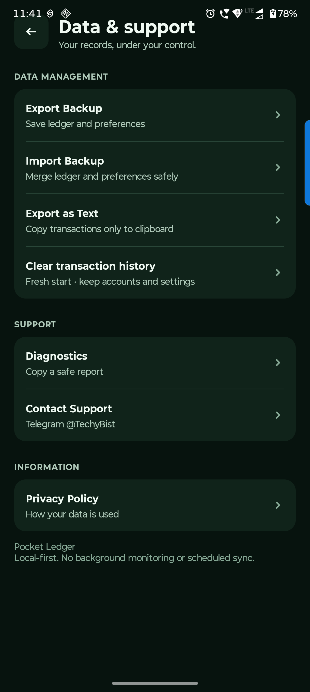

Android handbook · 6.1.0-preview.14
Back up or change phones.
What moves with you, what stays local, and fresh starts.
Settings → Data & support
Keep a backup before you move.
Use JSON for a restorable financial backup. Make a copy before changing phones, migrating an older app or clearing history.
Export financial JSON
Choose Export Backup and save it somewhere you can find later. It includes accounts, people, entries and portable preferences.
Import and check the result
Import Backup merges by ID and keeps newer local records. Preferences in the backup can replace your current preferences. Check the ledger afterward and reconnect your private Web App URL manually on a new device.
Treat a fresh start separately
Clear transaction history removes financial entries but keeps accounts, opening balances, links, preferences and separate split bills. Balances return to opening amounts. Use it deliberately after a backup.
Keep an older app installed until its JSON has been imported and checked in this preview. Import is a merge, not an undo button. Uninstalling or clearing app storage can lose local split bills.

Questions you might have.
Will importing my old backup remove the newest entries?
No. Import merges by stable ID and preserves newer local versions. It is not a complete rollback. Review the import report.
How do I move split bills to a new phone?
There is currently no restorable split-bill export or transfer in this app. Share summary gives a readable record, not a backup. Keep the original app/device if those bills are needed.